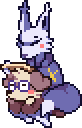
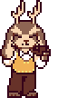
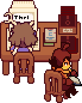
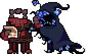

Q&A

Who's the prettiest constellation amongst all the stars?
Anonymous
Messy cursive, uneven spacing, constellations...
I wonder who wrote this question.
Well, I'm sure whoever wrote it is incredibly handsome, intelligent -
And chews on their bones with the energy of a cute puppy.
I do not...!
... er...
Back on topic!
What's your answer to this charming question?
Hmm...
Alpha Vulpeculae.
(... also known as Anser.)
Hehehe, correct!
You are the loveliest constellation I have ever laid my eyes on.
I see, I see...
...
Gah!
Y-you're hugging me rather tightly!
Well, who can resist such a charming teddy bear?

What was it that made Callista fall for Jove?
Exaber
Hold on, you're asking why my wife got with me?
Now, I know that's not meant to be a loaded question...
But it's a loaded answer.
Back when we first met, during our prime time in the Guard...
What drove her to me?
I couldn't tell you.
Maybe she liked my mug, maybe she liked my voice...
Maybe it was proximity.
Or maybe it was something else altogether.
A thousand different things I saw in her...
I'm sure she thought the same about me.
Hmm...
A better way to put it might be...
Do you really expect me to sit here and explain love?
Oh, I know...
"She liked my card game."
Kahaha!

For Luna: If possible, have you ever considered a getting a
pet? If so, what kind?
Ragdoll
You know...
I've always been fascinated by animals.

Flesh and blood, but not, like... evil.
Are you calling all humans evil?
Villainous may be more apt. Heroes have to stand up to humans!
But, I could use a sidekick...
That Riley could be of use, then.
They're a monster, Dad!
They can be their own hero.
I want, like... a Super Dog.
Ah... Quigley, then.
No!
Maybe a cunning fox would be better...
Aunt Anser would be plenty glad to help.
Not her!
Maybe I should just settle on a rabbit.
So... that brings us back to Riley.
Dad!

How did you meet Riley and What were their first days like
in Snowdown? (Question for Luna)
Verduras53
Well, we met down in Waterfall while I was dumpster diving.

It's a professional hobby of mine.
I heard a huge splash from somewhere deep in all the trash.
At first, I thought I hit the motherload.
A heavy piece of garbage is usually worth something to someone!
While, in the dark, it was impossible to see at first...
There was a monster, laying face-first in the water.
After dragging them out and consoling them...
They agreed to come with me back to Snowdown.
Apparently, they were already on their way there.
And that's how I met Riley!
The other circumstances, you should probably ask them about.
As for their first couple days?
Well, the city slicker needed to learn some ropes.
But they're a very quick learner!
For Riley: Who taught you martial arts?
TripleForces
Comics.
Super-men, animal-themed men, YU-men...
Every comic has fight scenes. The first move I ever learned
was from one.
Thinking about it... almost all my favorite media was
martial arts-related in some way.
Visual learner, apparently.
Question for Riley- did you know any of the previous fallen
children before you, do some monsters talk about how close they
were to them before their souls were taken?
Sophiemusicmaster
- KNOWN HUMANS -
The Adopted One:
A martyr. Worshipped and revered by most. Treated like
royalty; best I can tell, they actually are.
The Last One: Only spoke of in whispers. Opinions on them
are much more divided... mostly negative.
Riley: Myself. Integrating as best I can.
Hey Riley, I've always wondered, you've lived in the underground
for quite some time, what was it like when you first arrived
there? How did you manage? And are there any monsters you feel
indebted to, for helping you adjust, without them knowing what
you are?
Anthonyouki
-- DAY XX --
Lost count. Not that it matters, since monsters have a
different calendar.
Days feel different with no sun or moon.
Luna has shown up almost every day, though... more than I've
remembered to write in this thing.
I have to stay low, hidden, for her sake.

For Riley, what's your favorite food?
GR8
Settle down, mate!
I'll be answering this one.
Now, let's see here...
...
Hey, this ain't for us.
It's for that rabbit fella.
I don't bloody know what they eat!
Ha-ha-ha!
That's AN easy quest-ion to answer!
Like all the other cretins in Snowdown...
They CONSU-ME snow!
Like all the other disgus-ting snoweaters.
With a side of pancakes, aye?
What?
I said -
No, you ID-IOT!
Rabbits eat carrots! CAR-ROTS!
IT WOU-LD BE A SIDE OF CARROTS!
I mean, technically, carrots aren't all that good for -
SI-LENCE! I need not hear the vowels of uneducated RAB-BLE!
NEXT QUEST-ION!
What next question?
There aren't any left.
WHAT?!
I'm the ROSE of the LEA-GUE!
And you're saying...
I don't have any quest-ions...?
Yep.
...
I'm gonna go out for a smokie now.